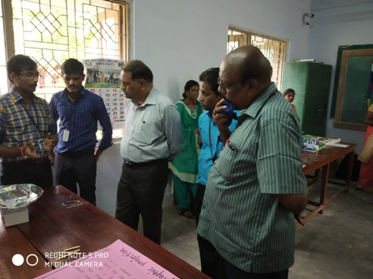

Ayya Nadar Janaki Ammal College
About Us:
The Ayya Nadar Janaki Ammal College established in 1963 is a standing testimony to the wisdom and farsighted of The Legendary of Humanitarianism Thiru. P. Ayya Nadar, a farsighted industrial architect of Sivakasi town and renowned academician and his equally generous wife Thirumathi A. Janaki Ammal, caters the need of rural sector for higher education. As this Institution was established by their Munificence, the College was fittingly named after them. Discipline and Academic Excellence are Hall Mark of this Institution.
Faculty Details
Activity
National Conference-2018

National Mathematics Day (131st Srinivasa Ramanujan’s Birthday)
Emerging Trends in Topology and Geometry, 15 and 16 February 2019
Qmaze 2018